6.2. 逆伝播¶
6.2.1. 加算の場合の逆伝播¶
加算の場合、上流の逆伝播がそのまま流れる。
\(z = x + y\)という数式の、逆伝播を考えてみよう。
この式の微分は以下の通りになる:
\[\begin{split}\frac{\partial z}{\partial x} = 1\\ \frac{\partial z}{\partial y} = 1\end{split}\]

6.2.2. 乗算ノードの逆伝播¶
乗算ノードでは、順伝播の入力信号が必要です。
\(z = xy\)という式の微分は、
\[\begin{split}\frac{\partial z} {\partial x} = y \\ \frac{\partial z} {\partial y} = x\end{split}\]
6.2.3. リンゴの買い物¶
太郎くんはスーパーで\(1\)個\(100\)円のリンゴを\(2\)個買いました。支払う金額を求めなさい。ただし、消費税が\(10\)%適用されるものとします。
支払う金額は、\(100 \times 2 \times 1.1 = 220\)です。ここから、以下3つの微分を求めます。
リンゴの値段に関する支払金額の微分
リンゴの個数に関する支払金額の微分
消費税に関する支払金額の微分